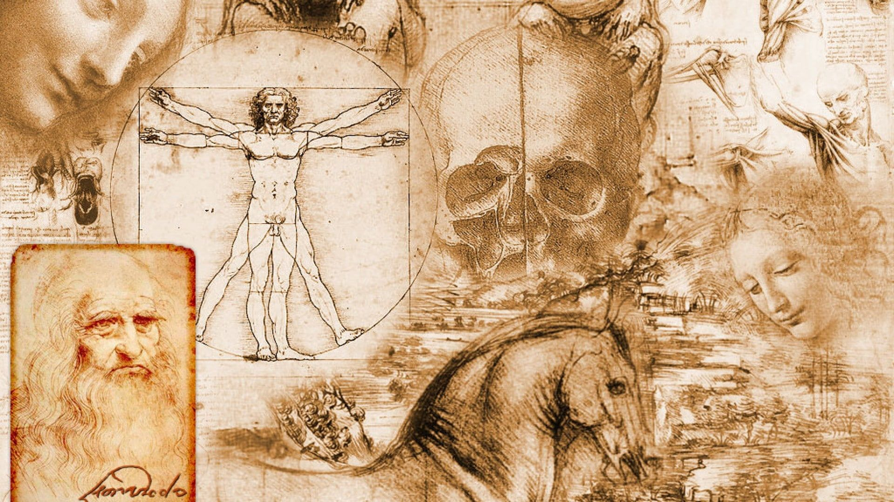

Leonardo da Vinci foi um dos maiores gênios renascentistas e um dos mais influentes artistas e cientistas da história. Ele nasceu em 1452, na cidade de Vinci, na Itália, e faleceu em 1519, em Amboise, na França.
Da Vinci foi um polímata, ou seja, uma pessoa que se destacou em diversas áreas do conhecimento, como pintura, escultura, arquitetura, anatomia, engenharia, matemática, música, entre outras.
Como artista, Da Vinci é conhecido por suas obras-primas, como a "Mona Lisa" e "A Última Ceia". Sua habilidade em retratar a natureza, o realismo das expressões e a técnica de sfumato (um estilo de esfumação de cores para criar transições suaves) tornaram suas pinturas únicas e atemporais.
Além de suas realizações artísticas, Leonardo da Vinci também foi um inventor prolífico e um cientista curioso. Ele dedicou grande parte de sua vida ao estudo da anatomia humana, realizando dissecações e desenhando com detalhes precisos as estruturas do corpo humano. Suas anotações sobre a anatomia, muitas vezes acompanhadas por esboços, são consideradas extremamente valiosas para a compreensão do corpo humano.
Da Vinci também se destacou em projetos de engenharia e invenções. Ele concebeu projetos para máquinas voadoras, submarinos, pontes, tanques de guerra e muitos outros dispositivos inovadores. Embora muitas de suas ideias tenham sido além de sua época e não tenham sido construídas durante sua vida, muitas delas foram fundamentais para o desenvolvimento posterior da tecnologia.
A genialidade de Leonardo da Vinci estava em sua capacidade de combinar ciência e arte, explorando a interseção entre os dois campos. Ele acreditava que a observação atenta da natureza era essencial para o conhecimento e a expressão artística. Sua abordagem multidisciplinar e sua busca incessante pelo conhecimento tornaram-no uma figura icônica e um símbolo do Renascimento italiano. Seu legado influenciou gerações posteriores de artistas, cientistas e inventores, deixando uma marca indelével na história da humanidade.
